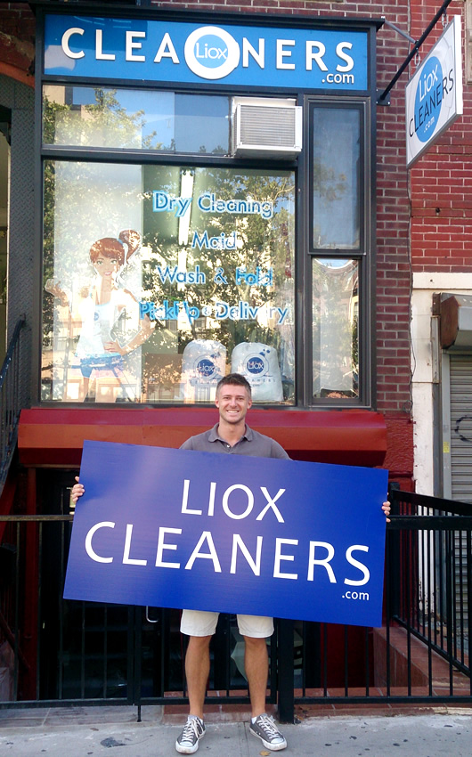
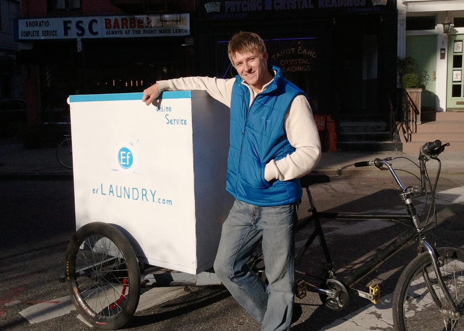
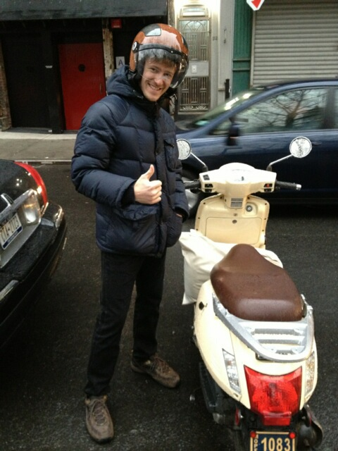
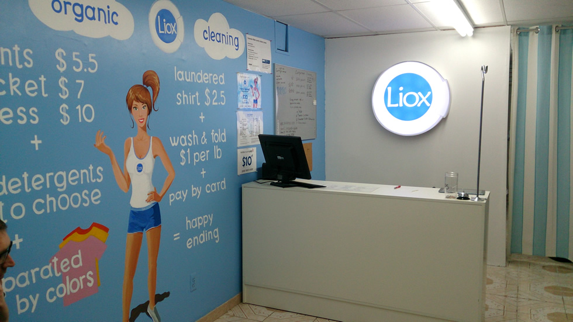
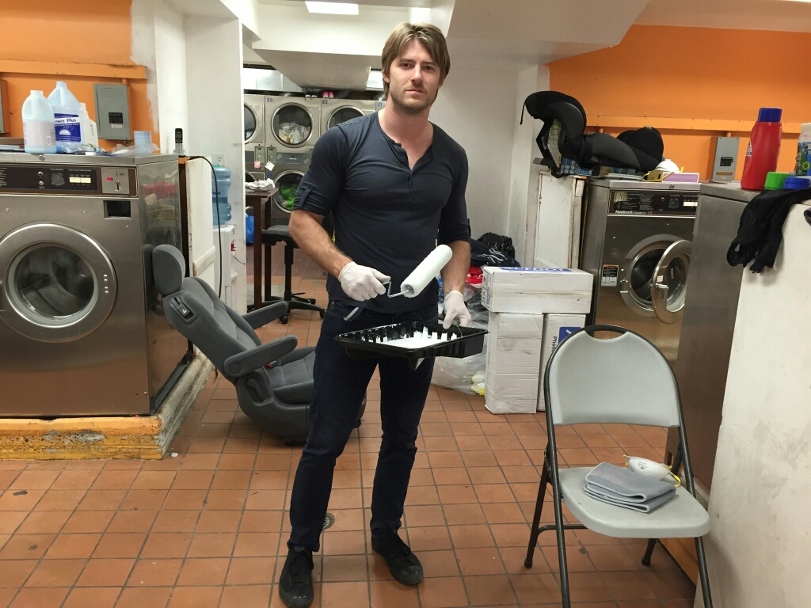
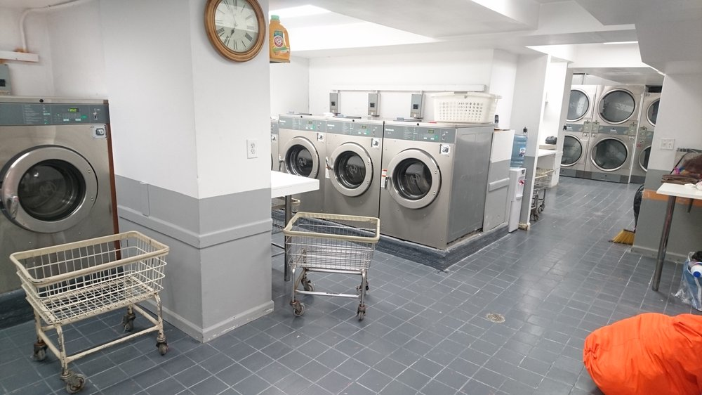
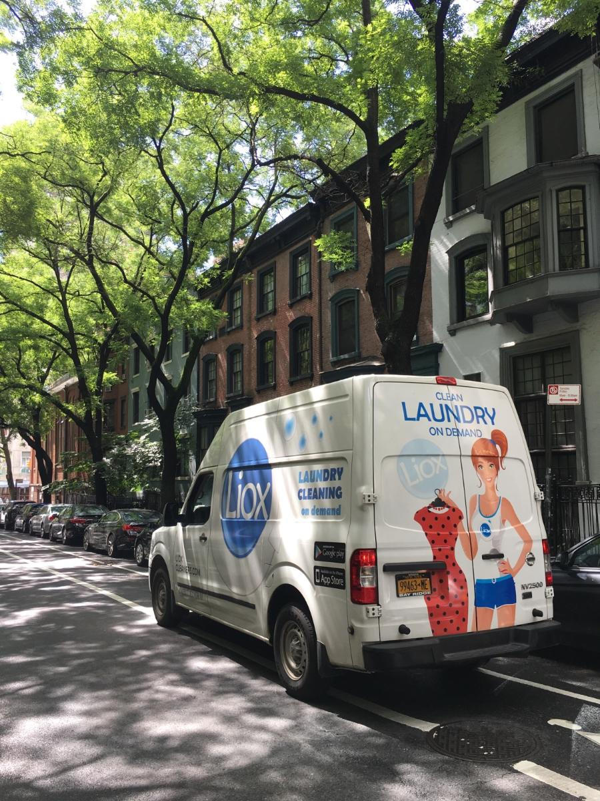

Welcome to WashyCare story page, whether you wanted to know more about it or not, you are reading it now! My name is Sergey Patrikeev and i am the founder of WashyCare.

1st WashyCare Store at Allen st (June 2013)
Will address an elephant in the room, WashyCare is my nickname, i created it when i was 14 playing computer games, it doesn't actually mean anything. I moved to New York in 2008 at 19 without any english, leaving all my friends and family behind in Siberia Russia, i was a tech grad working in restaurants for the next 3 years.
Now that you are ready and still here, i started WashyCare as an online service, the first page and logo were designed in August 2011 and it was actually called Ef Laundry (meant to sound f*** laundry).
After 3 months of developing ordering system, integrating payments and testing, WashyCare was launched on November 14 of 2011. Through completely maxed out credit cards and huge expectations, WashyCare launch was a disaster. Not a single user signed up in the first 2 weeks. Despite thousands of fliers spread around chinatown. New Year of 2012 turned out to not be happy at all.

"Ef Laundry" delivery bike, Mark 1 (November 2011)
My only partner quit within a month of launch (i can't blame her). I was left to figure out what i am gonna do with my life, thousands of dollars and months of work invested in the startup. It was definitely not a traditional Uber story where founders launch on Monday and on Tuesday they have millions of dollars worth of business and investors are knocking on the door. Laundry industry is a marathon, yes a marathon where you survive by running it at the lowest cost possible tying to maximize every dollar spent.
Few weeks after the launch i got my first customer, a week later another one, few days later another. It kept coming like a snowball. I was one man company for the next 2 years, taking a subway to pickup laundry from a customer, going to the cheapest laundromat in chinatown, i would wash, dry and fold clothes, i had to learn how to do it like a professional (thanks to a chinese lady Kwong who was like my second mother, we are still friends today) and would deliver bag nicely folded and packed, back to customer on set time. I made a list of companies that were doing same service as i, they all went out of business within next 3 years.
I bought a pedicab and attached huge metal box to it capable of fitting 3 grownups, no kidding (picture above). 6 months later it was stolen.

WashyCare Delivery vehicle, Mark 2 (January 2013)
Within a year I gained a big enough customer base, got a Vespa scooter and attached a metal box to the back capable of holding 2 laundry bags of 20lbs each. I would put another bag between my legs and 2 more hanging on both sides. It was crazy. I would wash 15 bags a day in the laundromat, put 3-4 bags in the washers and go pick up more while the washers were doing the first batch. I would come back within 30-40 minutes with more laundry, put that batch in the dryers and the second batch in the washers. Then I would come back with the third, put it in the washers, the second batch in the dryers, and start folding what finished drying.
While having my cellphone as a customer service line, I would answer my phone saying ‘F Laundry, how can I help you?’.
People were looking at me as if I were out of my mind. One day the owner of the laundromat told me to leave and not to come back. Even though I was giving him $2500 of business a month by using his coin machines, he wasn't happy about me scaring customers and using most of their equipment. I had to start researching other cheap laundromats while looking for a storage space.

WashyCare 2nd store (May 2014)
Having found a cheap space for rent on the second floor of the building, I decided to open my own retail store. I would continue washing and delivering laundry from a different laundromat while at night renovating the store, assemble clothing racks from metal pipes and hinges, and paint it all, put in a reception table, computer, music, signs everything to make it look as nice as possible, new company name was born: "WashyCare Cleaners".
I felt so proud of myself for having my own local business and on-demand service from nothing. I started giving laundry to a local Chinese store to wash at wholesale prices while standing behind the register myself. Within 2 months all my money was gone and I had to close my store.
I had to go back to washing laundry myself and driving it on the scooter to customers while collecting money for next month’s rent. A month later I opened again. I hired a person to help me with the register while I was doing washing and delivering. We were able to develop the first store where we would give laundry to one laundromat and dry cleaning to another wholesaler to have it done before the next day.
The third winter was coming and I had completely burned myself out. I couldn't endure doing it for another 3 months in the harsh winter weather driving a scooter to customers in the blizzards when even cars wouldn't drive out. My battery would die every other day, the scooter would break every other week. I got hit by cabs, crashed into other cars coming out of nowhere, fell on the ice and more.
It was the worst job in the world!
I hired a driver to replace me, rented my apartment for a few bucks more than I had paid for it and left to San Francisco to find investors. I couldn't keep bootstrapping it anymore.
While in San Francisco I spoke to a dozen of investors. A new startup called Washio had come out just a year ago, Everyone put money in it, including Nas and Ashton Kutcher. However, having experienced pretty much everything by then, I saw a few major flaws. I remember talking to one of their investors, Haroon Mokhtarzada who agreed with me on a few points, and said that he was just one of a few investors on the board and they made different decisions. 2 years later Washio went out of business with over $34M in backing.
With no success in raising money, i came back to rebuild WashyCare.
I went on to open 2 more stores within a year, and renovated each of them personally to save as much money as possible, plus I loved building things with my hands. With some help from my parents we switched my scooter to a Honda Element and a year later we got a brand new Nissan NV cargo van with high roof wrapped with our logo and beautiful art to be a driving billboard.


Rebuilding WashyCare Laundromat (November 2016)
A year later we had our own state-of-the-art facility with close to 100 pieces of brand new equipment, enough power to take on the next step in conquering New York.
Today WashyCare and the sister company Wash Supply offer various service all done in house servicing high end hotels and restaurants, local businesses, gyms, yoga studios, massage salons and of course residential customers on the daily basis with the fleet of commercial vans sailing through the streets of the greatest city on earth.

WashyCare Delivery Vehicle, Mark 4 (April 2017)
All started with less than $8000 pocket savings.